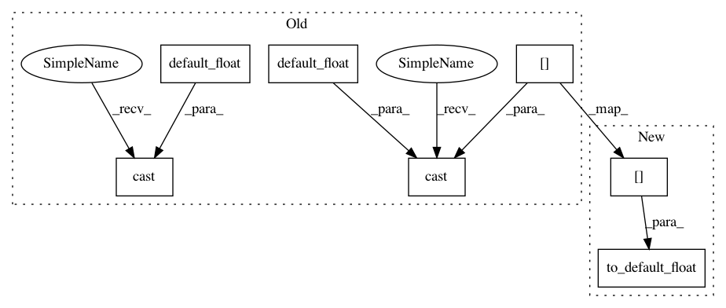

516f97c543f0816677fd00ec24b47f31f2618f67,doc/source/notebooks/tailor/gp_nn.pct.py,,map_fn,#Any#,47
Before Change
def map_fn(input_slice: Dict[str, tf.Tensor]):
updated = input_slice
image = tf.cast(updated["image"], default_float()) / 255.
label = tf.cast(updated["label"], default_float())
return tf.reshape(image, [-1, image_size]), label
autotune = tf.data.experimental.AUTOTUNE
dataset = original_dataset\
After Change
def map_fn(input_slice: Dict[str, tf.Tensor]):
updated = input_slice
image = to_default_float(updated["image"]) / 255.
label = to_default_float(updated["label"])
return tf.reshape(image, [-1, image_size]), label
autotune = tf.data.experimental.AUTOTUNE
dataset = original_dataset\
In pattern: SUPERPATTERN
Frequency: 3
Non-data size: 7
Instances
Project Name: GPflow/GPflow
Commit Name: 516f97c543f0816677fd00ec24b47f31f2618f67
Time: 2020-03-16
Author: st--@users.noreply.github.com
File Name: doc/source/notebooks/tailor/gp_nn.pct.py
Class Name:
Method Name: map_fn
Project Name: GPflow/GPflow
Commit Name: 516f97c543f0816677fd00ec24b47f31f2618f67
Time: 2020-03-16
Author: st--@users.noreply.github.com
File Name: gpflow/models/gplvm.py
Class Name: BayesianGPLVM
Method Name: log_likelihood
Project Name: GPflow/GPflow
Commit Name: 516f97c543f0816677fd00ec24b47f31f2618f67
Time: 2020-03-16
Author: st--@users.noreply.github.com
File Name: doc/source/notebooks/tailor/gp_nn.pct.py
Class Name:
Method Name: map_fn
Project Name: GPflow/GPflow
Commit Name: 516f97c543f0816677fd00ec24b47f31f2618f67
Time: 2020-03-16
Author: st--@users.noreply.github.com
File Name: gpflow/models/sgpr.py
Class Name: SGPR
Method Name: log_likelihood